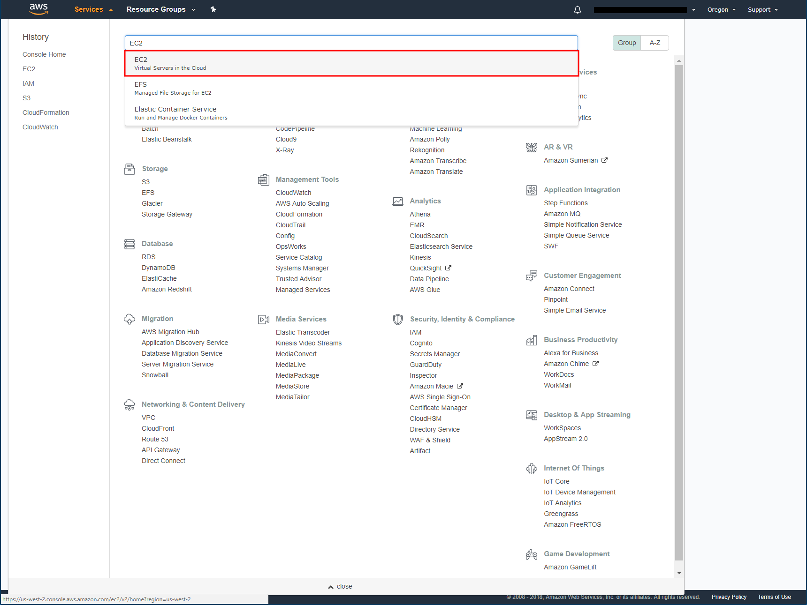
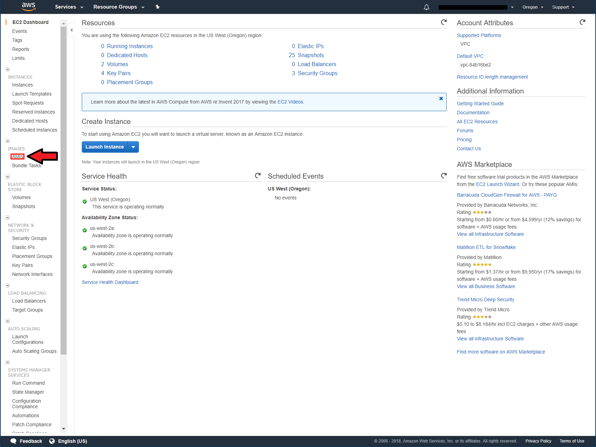
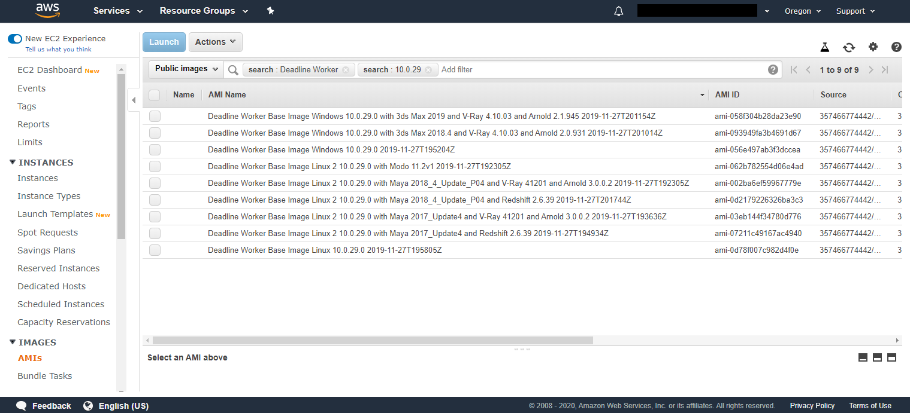
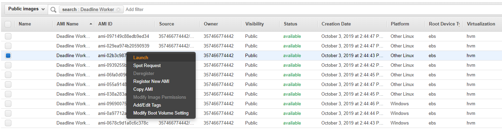
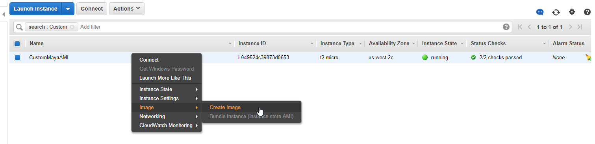
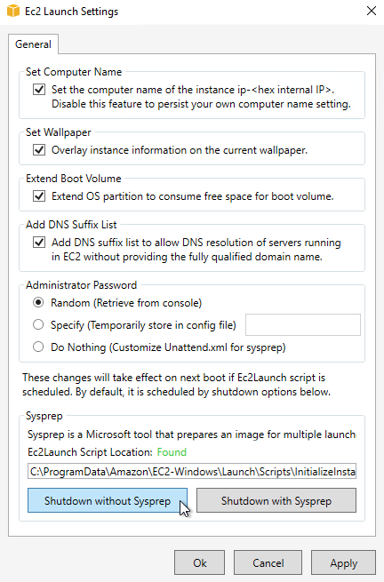
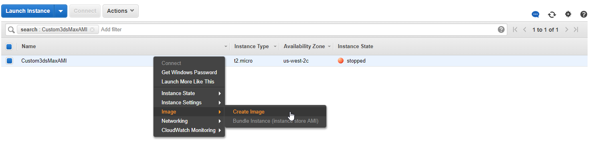
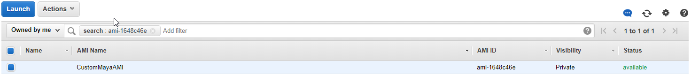
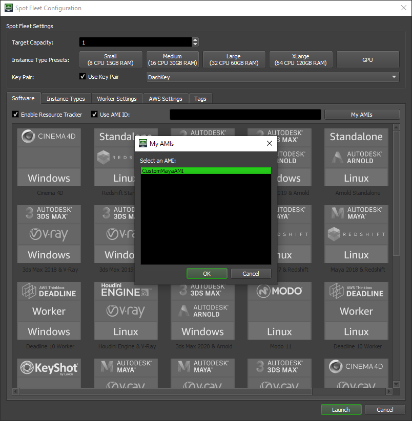

Note
While AWS Portal can enable cloud rendering in Deadline 10, AWS Deadline Cloud is a newer offering that has been built specifically for the cloud. It is a fully managed service that does not require installation or maintenance of infrastructure (e.g., repository, database, or license server). Worker fleet auto-scaling, asset synching, and licensing are all managed natively within AWS by Deadline Cloud. See here for more information on Deadline Cloud and its capabilities.
Amazon Machine Image Customization¶
Overview¶
An Amazon Machine Image (AMI) is a snapshot of an EC2 instance in time. If you launch an instance based off of an AMI the new instance will look like the instance that the AMI was based off of. Further reading on AMIs.
If AWS Portal does not offer the software/plugins that you need, it is possible to customize one of the pre-packaged AMIs (Amazon Machine Image) to fit your environment. By creating an EC2 instance from one of the AWS Portal AMIs you can install the software and plugins needed, create your own AMI and specify it when launching a fleet.
Finding Which AMI to Start From¶
The first step to creating a Custom AMI is to choose the base AWS Portal AMI to start from. Go to AWS Management Console > Services > Search for EC2 and select it.
On the left side of the screen select Images > AMIs
Now you need to search for the appropriate AMI to base your image off of. First in the search bar switch “Owned by me” to “Public Images”. Next click the search bar and select “Owner” then enter “357466774442” and hit enter.
This will show you all of the public AMIs that are owned by Thinkbox Software. Next decide which operating system you would like to create an ami for either Windows or Linux, then decide the Deadline service pack you would like to start from. Once you have decided this add “Deadline Worker Base Image Operating System Deadline Version” to the search bar and hit enter, so for example if you wanted Deadline service pack 13 on Linux you would add “Deadline Worker Base Image Linux 10.0.29” to the search bar. Before launching the instance it is important that you verify that the owner of the AMI is “357466774442”. This is the only account you will find official Thinkbox AMIs in.
You can now find the base AMI you would like to start from. If you would like to start from scratch you can use “Deadline Worker Base Image Linux” or “Deadline Worker Base Image Windows”. These AMIs only have installed on them Deadline, common dependencies for 3D applications, and software for the AMI to work with AWS Portal. You can also start from one of the AMIs that already have a 3D application installed on them. For example if you would like to make an AMI that has your custom plugin for Maya on it you would start from “Deadline Worker Base Image Linux 2 10.0.29.0 with Maya 2017_Update4 and V-Ray 41201 and Arnold 3.0.0.2”.
For AMIs before version 10.0.29.0 you will have to search “Deadline Slave Base Image” instead of “Deadline Worker Base Image”.
Launching the EC2 Instance¶
The next step in creating a custom AMI is to launch an EC2 instance from the base AMI. This is accomplished by right clicking the AMI you have selected and clicking Launch.
Launch the instance into the default or your own VPC (Virtual Private Cloud). If you do not have a VPN (Virtual Private Network) setup, you will need to assign a public ip to the instance in order to make it accessible via the internet to connect remotely. The root volume will need enough space allocated for the software being installed. Create or assign a security group that allows you to connect to the instance. RDP (Remote Desktop Protocol) on port TCP 3389 for Windows or SSH (Secure Shell) on port TCP 22 for Linux. Assign your networks public ip, xxx.xxx.xxx.xxx/32 to lock down who can connect, MyIP can be selected as the source to autofill the ip.
Additional information on launching an Amazon EC2 Instance can be found in the AWS Launching an Instance documentation.
Connect to the Instance¶
Once the instance has been launched and is in a Running state you can connect to the instance to make modifications. Depending on the operating system of the isntance you will need to follow the Linux/Mac or Windows connection documentation.
Software Installation¶
To install software you will need to transfer or download the installers to the instance. If the installers are accessible via the internet or S3 they can be downloaded. The following links outline methods for transferring data to Linux or Windows instances from your local network.
Transfer Data to a Linux instance using:
Transferring files to a Windows Instance.
Create an AMI¶
Now that you have setup your instance how you would like it, you can create a snapshot of it by creating an AMI.
Linux¶
Once the Linux instance has been configured go to AWS Management Console > EC2 > Instance. Right click your instance, select Image > Create Image. Then input the Image Name, Note that Image Names must be unique per region per account. Click Create Image after you have input the Image Name.
Windows¶
Once the Windows instance has been configured, you must stop the Deadline Launcher Service. To do this, open the start menu and type “Powershell”. “Windows Powershell” should come up as the first item in the search results. Hit Enter and a Powershell window will open. In the powershell Window, run the following command:
Stop-Service -Name "deadline10launcherservice"
Next, run EC2LaunchSettings from the start menu. Enable “Set Computer Name” and then execute “Shutdown without Sysprep”.
Once the EC2 instance has been stopped, Right click your instance, select Image > Create Image. Then input the Image Name, Note that Image Names must be unique per region per account. Click Create Image after you have input the Image Name.
Launch a Custom AMI with AWS Portal¶
Once the status has changed from pending to available, the AMI is ready to be used. This information can be found in the AWS Management Console at Services > EC2 > AMIs > Owned by me > AMI Name.
When launching a fleet enable “Use AMI ID” and either copy and paste the AMI ID from the AWS Web Console or click the “My AMIs” button and select the AMI you have created from the drop down menu.

{kind=link}
{kind=link}
{kind=link}
{kind=link}
{kind=link}
{kind=link}
{kind=link}
{kind=link}
{kind=link}